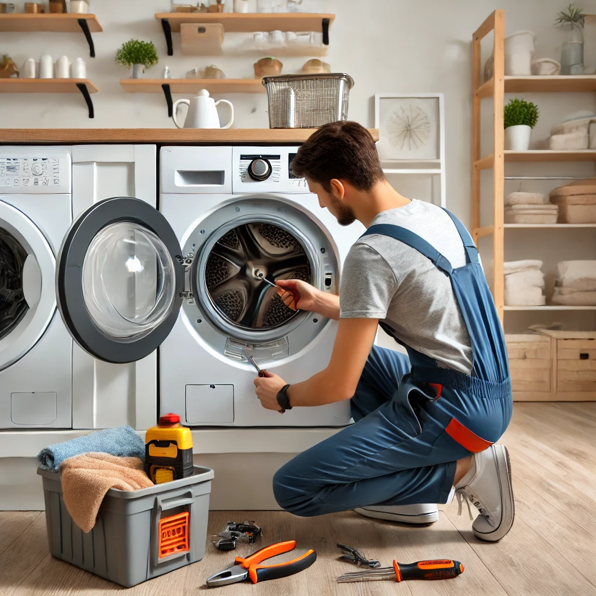

How to Extend the Lifespan of Your Washing Machine
Washing machines are a significant investment for any household, and maintaining them properly can help extend their lifespan. Here are some tips to keep your washing machine running smoothly:
1. Clean the Filter Regularly
One of the most important maintenance tasks is cleaning the filter. A clogged filter can cause water drainage issues and strain the machine’s motor.
2. Use the Right Detergent
Using the right type and amount of detergent can prevent excessive suds, which can lead to residue build-up and affect the machine’s performance.
3. Avoid Overloading
Overloading the washing machine can put extra pressure on the motor and other components, leading to wear and tear. Always follow the manufacturer’s load recommendations.
4. Level the Machine
An unbalanced washing machine can cause excessive vibrations and noise, which can damage the machine over time. Ensure your washing machine is level on the floor.
5. Inspect Hoses Regularly
Check the hoses for any signs of wear, cracks, or leaks. Replacing worn-out hoses can prevent water damage and prolong the life of your washing machine.
By following these maintenance tips, you can help ensure your washing machine operates efficiently and lasts for many years. If you encounter any issues, don’t hesitate to contact a professional appliance repair service.